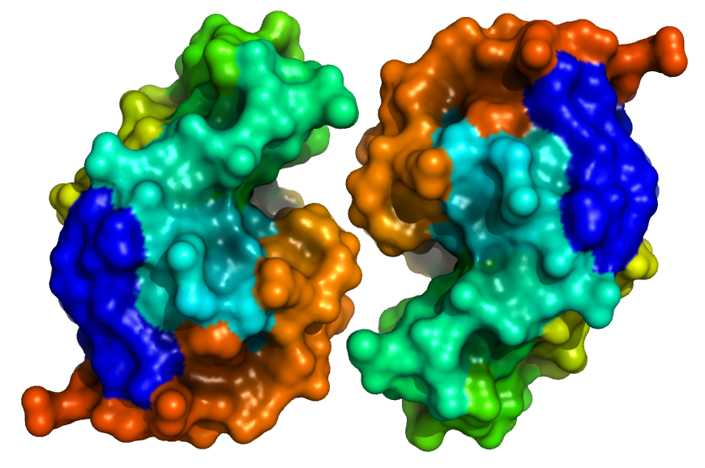

|
Furan5: A Structural Biology Blog with Minimalist Design |
|
Furan5: A Structural Biology Blog with Minimalist Design |
Minimal design?
Modern websites tend to emphasize sleek design at the expense of simplicity (and sometimes function). Infinite scrolling, animated dropdown menus, obtuse navigation,
and long loading times for a website designed to convey only a few lines of text are clear examples of modern design losing sight of what is important.
In the interest of returning to basics, I've used a minimalist approach to delivering content.
